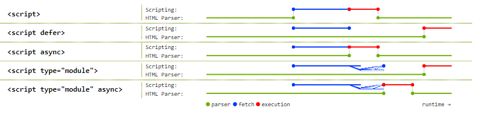

作为前端工程师，我们基本都被webpack和babel蹂躏过，并且将继续被蹂躏。module javascript(下面简称mjs)带来了一点点曙光，本文简单介绍一下mjs
基本用法
我们知道，一个js模块是封闭的：它里面定义的所有顶层变量的作用范围都是在模块之内；它对外的接口需要手动导出(export)，模块是我们写代码的正确姿势。但是普通的js文件被浏览器引入之后它里面的代码都是在全局作用域运行的，这才导致了各种模块加载方式的出现，如commonJS，AMD, es6 Module等。
mjs指的是在浏览器端可以直接引用es6 module模块，和普通的js一样，可以引入一个文件，也可以直接inline：
1 | <script type="module" src="main.mjs"></script> |
模块文件一般以mjs作为后缀，里面可以使用import和export，和平时的写法一样
mjs和普通js的区别
加上type="module"之后，引入的js变成了mjs，它和普通的js有很多区别：
mjs默认使用
strict modemjs中定义的顶层变量不再是全局变量
新的import和export语法只能在mjs中使用，不能再普通js中使用
不管被加载多少次，同一个mjs只执行一次；而普通的js每次加载都会执行
mjs通过CORS的方式加载，需要服务端的配合；而普通js直接可以跨域加载
mjs默认是defer，而普通js需要指定defer属性
inline mjs默认也是defer，而普通inline js无法defer
inline mjs可以设置async属性，而普通inline js无法async
这里有张经典的图可以说明上面几条性质：

其他注意点
mjs文件的路径(import * from modulePath)的限制：
1
2
3
4// Not supported (yet):
import {shout} from 'jquery';
import {shout} from 'lib.mjs';
import {shout} from 'modules/lib.mjs';1
2
3
4
5// Supported:
import {shout} from './lib.mjs';
import {shout} from '../lib.mjs';
import {shout} from '/modules/lib.mjs';
import {shout} from 'https://simple.example/modules/lib.mjs';对于CORS请求，如果是同域的话，需要注意是否发送credentials(cookies, etc)
大部分和CORS相关的api如果是请求同域的话，默认都会发送credentials的，但是fetch和mjs是个例外，你可能需要设置
crossorigin才能发送：1
2
3
4
5
6
7
8
9
10
11
12
13
14<!-- Fetched with credentials (cookies etc) -->
<script src="1.js"></script>
<!-- Fetched without credentials -->
<script type="module" src="1.mjs"></script>
<!-- Fetched with credentials -->
<script type="module" crossorigin src="1.mjs?"></script>
<!-- Fetched without credentials -->
<script type="module" crossorigin src="https://other-origin/1.mjs"></script>
<!-- Fetched with credentials-->
<script type="module" crossorigin="use-credentials" src="https://other-origin/1.mjs?"></script>但是这个例外未来很可能会变成不例外：
Both
fetch()and module scripts will send credentials to same-origin URLs by default. Issue要使mjs生效，服务端必须明确在对mjs文件的响应中把
content-type设置为js格式：推荐为text/javascript
有了mjs，还需要打包吗？
简单答案是：要
但是mjs提供了一些想象的优化空间，值得注意一下。
TODO
参考文档：
https://developers.google.com/web/fundamentals/primers/modules
https://jakearchibald.com/2017/es-modules-in-browsers/
https://philipwalton.com/articles/deploying-es2015-code-in-production-today/